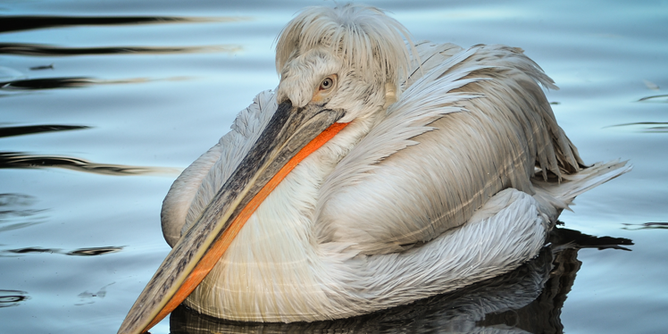

Dalmatian Pelican
AKA: Pelecanus philippensis crispus, Pelícano Rizado. Scientific Name: Pelecanus crispus Family: Pelecanidae Species: P. crispus Speed: 65 km/h Length: 160 – 183 cm Mass: 7.25 – 15 kg Wing Span: 183 – 350 cm Life Span: 16 – 23 years Location: From southeast Europe through central Asia to eastern China. Diet: Fish
Appearance:
Long and curly feathers on the head and neck. The adult is grayish-white over most of the body. The wings have dark tips that are noticeable in flight. Short and strong feet are webbed gray.
Facts:
- Dalmatian Pelican is the rarest of the world’s seven species of pelican.
- It is often silent.
- Its median weight makes it perhaps the world’s heaviest flying bird.
- It is an elegant flyer.